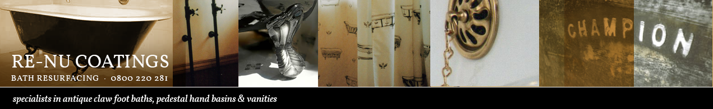
Re-Nu Coatings was established in 1985, specializing in restoring clawfoot baths. Having resurfaced clawfoot baths for 41 years, I take pride in restoring baths to their former glory.
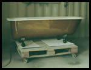
The restoration work is carried out off site in a factory. This ensures that a thorough, professional job is done on the inside and outside of your bath.We buy, sell or swap baths. Your bath can be restored in your choice of colour and included in the price are a variety of special effects on the feet, ie. Chrome antique to follow your tapware. Being a colour matcher, no choice of colour is a problem.
After viewing your bath, we can usually establish some of the history of it.
Some clawfoot baths have amazing casting marks; often these may include the name, the date and or year made, and the sizes. We buff these up to make a bit of a highlight. This gives you a good record of your bath and ensures the history of the bath is not lost!
I can restore the old traps and overflows back to their former glory. This is often necessary as some baths have an extremely large drain hole, and it's not possible to get a modern trap to fit. These can be chromed if necessary.
As I restore the baths in a factory, I can now supply you a loan bath so that your
bathroom can continue to function. This is clean, light and easy to manoeuvre. Its ideal for showering over or bathing the children. I can deliver this to you at the same time as picking up your bath for restoration.
Some customers still require to shower over their baths. We can assist you with this also. Over the years we have been able to come up with some very succesful shower arrangements.
We use a shower rail, going around the length of the bath, with the shower rose running at least 1m 100 up the bath. With 2 shower curtains overlapping on the last hook, making 1 curtain hanging from the rail, this is just one option and works perfectly. We can point you in the right direction and help you save money.
I am also an expert in putting showers over clawfoot baths if needed. We also resurface pedestals and hand basins.
We would welcome further enquiries, where possible we can call to your house to discuss your requirements and quote. I will also bring a photo album of 100 odd photos for you to view.
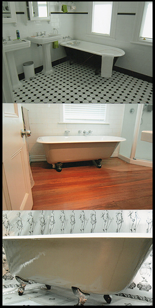
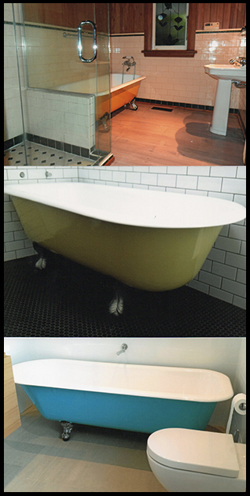
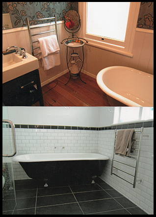
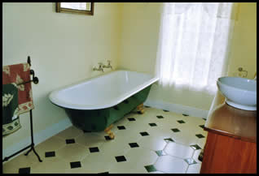
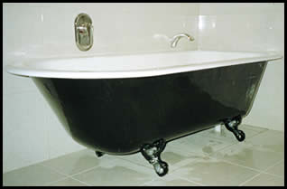
An absolutely fully restored clawfoot bath, in old fashioned green with brass antique effect on the feet.
Old fashioned green: This is a colour we have used for over 20 years.
The feet, in brass antique effect, have been coated in clear which makes them very easy to keep clean.
Chrome antique effect on feet coated in clear to protect, and is long lasting.
A new bright gold, is also another option for doing the feet in.
The feet have been done in a chrome antique effect to match in with their chrome tapware.
It has become very popular to use stone / earthy colours on the outside of baths. You can see some of the colours used on recent projects in our gallery to the left.
If the bath has any casting marks we take photos of these and send to the clients for their records.
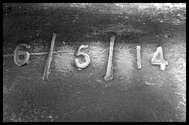
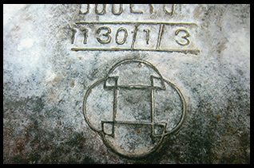
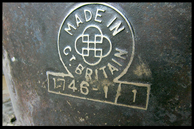
If the bath has the original overflows and brass traps we can restore, polish and lacquer these to their former glory.
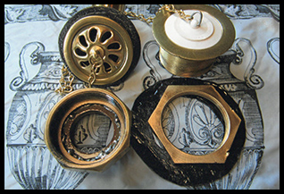
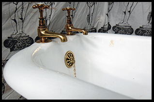
A '100 year old' overflow, that has been fully restored and rechromed.
If the bath has damage around the bracket where the feet attach, we can weld bolts in and repair any cracks.
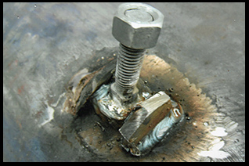
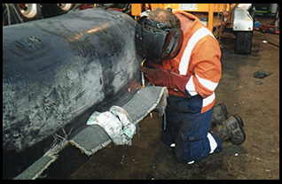
We do a lot of client work where the bath is used outside. The products we use are very durabel for outside use.
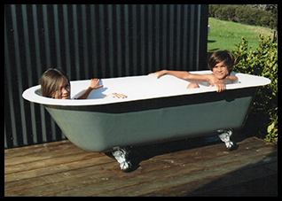
John Graham
2 Longford Park Drive
Takanini027 4 517 892
CALL FREE 0800 220 281Email john.graham327@xtra.co.nz
John is a rare enthusiast in a world where genuine tradesmen are hard to find. He provides an excellent, timely and professional restoration service, but with a passion unmatched in my experience of house renovation issues.
The bath he restored for me was a rare Kohler bath from the USA (he identified this from the shape in a pre-visit photograph). It was in a bad state with layers of a recoat from 30 years earlier with flaking enamel.
The bath was returned, precisely on time, refinished and with a truly impressive colour match job done on the outside surface.
As this is an American bath, John also extensively searched for, and renovated an old brass plug waste, which was more in keeping with the bath, the correct size and suitable to replace the worn modern waste.
All in All a magnificent job with all the practical obstacles this bath presented overcome!"Hilary
After discovering our 1930's cast iron claw-foot bath (someone had boxed in!) we contacted John regarding a refurb.
His knowledge of baths is impressive and bettered only by his skill in refurbishing them - a true old school master craftsman.
Several aspects of the recoat are customised and John has a great selection of photos of his work to look through.
The final product is something to behold and will now take centre stage in our new bathroom. Highly recommended.Phil
This guy is the real deal! His baths are a work of art: you will not find another person who restores baths to such a high standard as John. Many, many thanks John. You need to add another $500 on your asking price for the baths mate. Cheers.
Angus
The bath looks amazing and I was delighted with the history you found. You did a fantastic restoration job and justic for the old girl.
Trish
The bath looks beautiful. Thank you for the outstanding customer service you have shown me and thank you for the wonderful restoration job you have done - a million times better than any new bath we might have purchased.
Charlotte
Thank you very much for the bath - It really is exquisite. I would definitely recommend you to anyone.
Suzette & Franz
Extremely knowledgeable and helpful. A true craftsman. Thanks for all your help John.
John
We are thrilled, the bath looks fantastic! The workmanship looks second to none. We would strongly recommend anyone wanting a clawfoot bath to get one from you.
Don & Ange
Thank you for our gorgeous renewed bath. Your passion, enthusiasm and your dedication to repairing our bath to the highest possible standard was impressive. May she carry on another 100 years or more.
Jane
Extremely knowledgeable and helpful. A true craftsman. Thanks for all your help.
Having the pictures of the transition from sad and battered, to a state worthy of the bath is a wonderful record of your effort and care going into this. Very greatly appreciated!
Craftsman like this are too rare these days!
Thank you so much for the superb job you have done on our bath. You are a true legend and there are not many people with your ability left in this world. Well done!
Julia & Steve
A piece of art. Absolutely love my stunning new bath. John was very helpful and has done an awesome job of creating a masterpiece. Highly recommend.
Beautiful bath, absolutely exquisite. What a wonderful job you've done John. Extremely professional.
Great purchase. John went out of his way to help and offer advice. Cannot recommend more highly. Thank you.
Lovely to deal with, the bath is amazing - a true craftsman.
From the first point of contact we had with John we received nothing but professionalism and passion!
John has a great knowledge of not only the history of clawfoot baths but the experience with the best technique and processes to use in the restoration process. We are still amazed at how perfect our once very old, rusty and neglected bath has turned out. John listened to us about what colour-way we wanted and although this was not the 'usual' request he made sure we were happy at every step of the process and delivered us with what we wanted. John's company is unique in the fact he will collect, delivery and come back to help install it if requested, this ensures the bath is always handled with care and ends up in its final place safe and sound.
Our bath is the central focal point of our bathroom, every time we walk into the room its beauty stands out to us, John made this happen!
Alice & Lee
Devonport
We met John through our builder, after a quick phone call we arranged to meet. he arrived wtih 100 odd photos of clawfoot's he's lovingly restored.
He mentions Royal Doulton (I'm thinking plates) but he starts to make sense when he says he has a 100 year old Royal Doulton, slightly torpedo shaped classic clawfoot. Its like a corvette with the original wheels he says - I fall in love of course becuase it's the same vintage as our Mt Eden villa.
Today my restored 100yr old Royal Doulton clawfoot bath wtih antique chrome feet arrvied and it fits snug in the house and is a dream, the bathroom is our favourite, the clawfoot is a stunning early christmas present - thank you John.
Rachel
Mt Eden
We purchased a villa in Auckland approximately 5 years ago, along with the purchase came an existing claw foot bath. Although functioning ok the colour of the bath clashed with the rest of the decor and had a large number of chips out of its surface.
We range a number of companies from the Yellow Pages, all seemed unenthusiastic and lacked any sense of customer service, that was until we called John. We were immediately sold on his abundant passion and knowledge.
The bath has now been returned and looks absolutely stunning. Along with John's outstanding reliability, the care and attention to detail is exceptional. We are delighted with the job John has achieved and will be recommending his service to any prospective clients.
the Creightons
Ellerslie, Auckland


{kind=link}
{kind=link}
{kind=link}
{kind=link}
{kind=link}